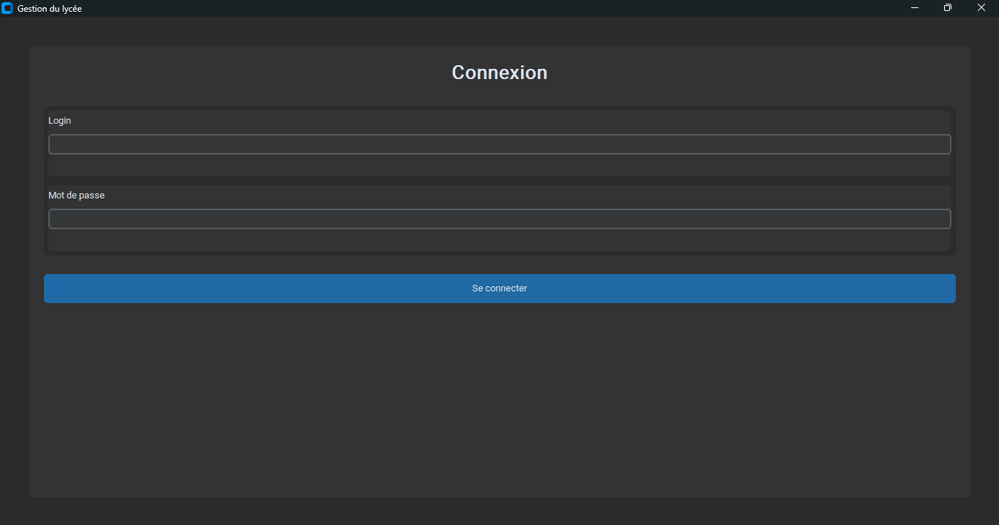

01
Gestion des élèves
Enregistrer, rechercher et consulter les informations relatives aux élèves.
Développement logiciel
Application desktop destinée à faciliter la gestion des élèves, des classes, des matières, des notes et des résultats scolaires.

L'application vise à centraliser les informations scolaires et à simplifier certaines opérations réalisées quotidiennement par l'administration d'un établissement.
Projet en développementFonctionnalités
Enregistrer, rechercher et consulter les informations relatives aux élèves.
Saisir, modifier et consulter les notes associées aux différentes évaluations.
Calculer les moyennes et faciliter la consultation des résultats scolaires.
Organiser les élèves au sein des différentes classes et niveaux.
Structurer et persister les données à l'aide d'un modèle relationnel.
Préparer la génération de documents permettant de présenter les résultats.
Architecture technique
Langage principal utilisé pour la logique de l'application.
ORM utilisé pour représenter et manipuler les données relationnelles.
Base de données locale destinée à la persistance des informations.
Organisation du projet autour d'une séparation claire entre données, logique et interface.
Projet suivant
Découvrez mes expérimentations autour de plusieurs algorithmes cryptographiques.